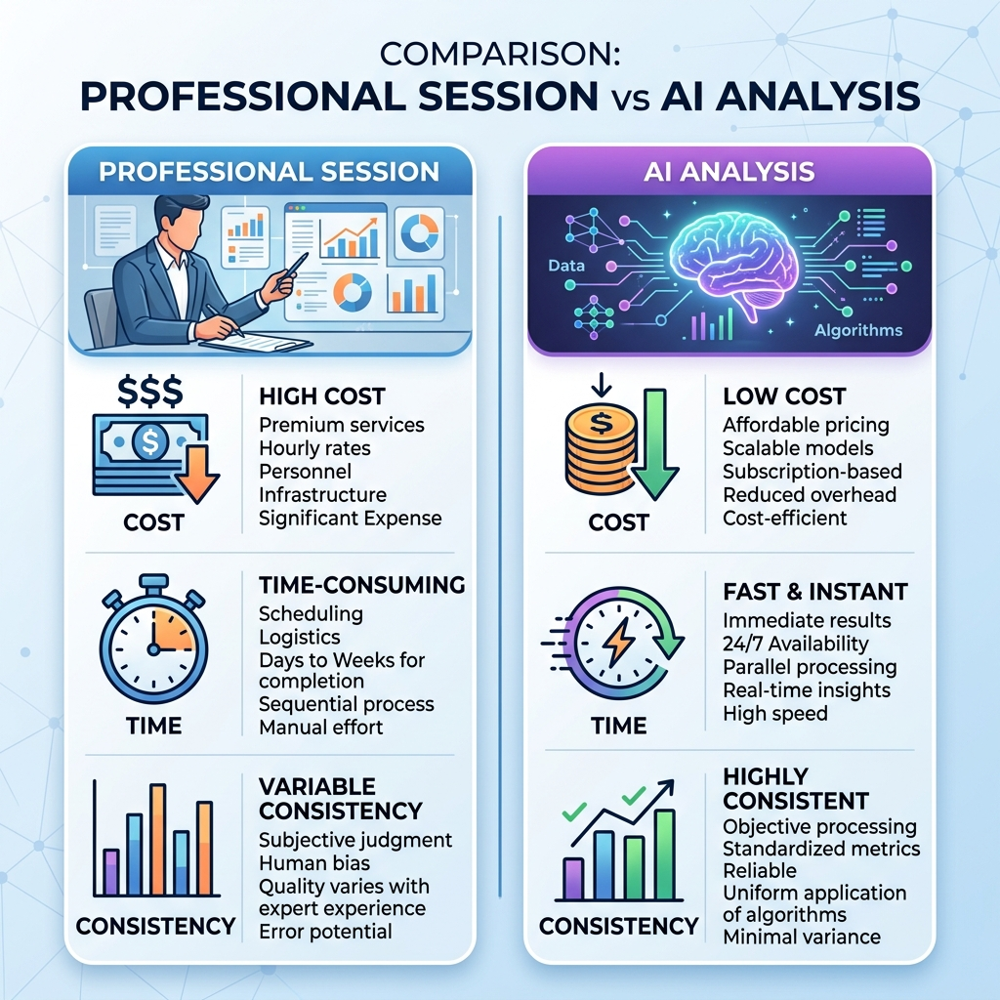

Last updated: July 14, 2026
Professional Colour Analysis vs. AI Colour Analysis: Which Should You Trust?
Quick answer: A professional in-person session offers expert judgement and real-world lighting checks, typically for ₹3,000-₹8,000 and an hour or more of your time. AI colour analysis is instant, repeatable, and free or low-cost, applying the same consistent standard every time — the tradeoff is that a human expert can adapt to nuance in a way software can't yet fully replicate.

What a Professional Session Involves
A colour consultant physically drapes different fabric swatches near your face under controlled lighting, watching how each shade affects your skin, eyes, and overall appearance in real time. This hands-on, expert judgement is valuable — but it's also time-consuming, appointment-based, and priced accordingly.
What AI Analysis Involves
An AI tool analyses a photo of your face — reading undertone, depth, and contrast from pixel data — and returns a result in seconds. The trade-off for speed is that result quality depends heavily on lighting and photo quality, and the AI doesn't adapt to context the way a human eye can (like noticing you're currently sun-tanned versus your baseline tone).
The Honest Comparison
| Professional | AI | |
|---|---|---|
| Cost | ₹3,000-₹8,000+ | Free to a few hundred rupees per scan |
| Time | 60-90 minutes, by appointment | Under a minute, anytime |
| Consistency | Varies by consultant's experience | Applies the same standard every time |
| Nuance & context | Can account for unusual cases | Limited to what's visible in the photo |
| Repeatability | One-time unless you pay again | Free to re-check anytime lighting or looks change |
When to Choose Which
Choose a professional session if you want an in-depth, one-time deep dive with expert explanation, or if your traits are genuinely borderline and you want a human's judgement call. Choose AI analysis if you want something instant, low-cost, and easy to re-check — especially useful if you're building an entire wardrobe strategy and want to check individual garments against your palette repeatedly, which would be impractical to do with a paid consultant every time.
FAQ
Is AI colour analysis as accurate as a professional?
For most people, a well-built AI tool using a clear, well-lit photo gets very close to professional-level accuracy — the main risk is inconsistent input (bad lighting, filters), not the underlying analysis method.
How much does professional colour analysis typically cost in India?
Sessions generally range from roughly ₹3,000 to ₹8,000+ depending on the consultant's experience and whether it includes a personal colour swatch booklet.
Can I use both?
Yes — many people get a professional session once for a deep, expert-guided baseline, then use an AI tool ongoing for quick checks while shopping or building their wardrobe.
Get instant, repeatable results — [try Colourity's AI colour analysis →](https://colourity.com)